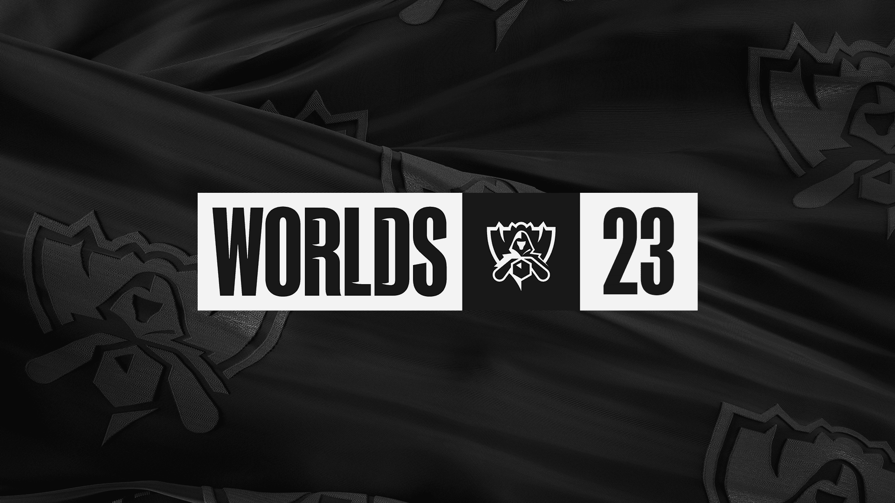
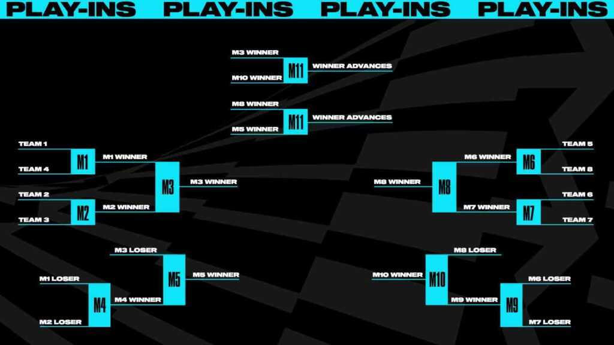
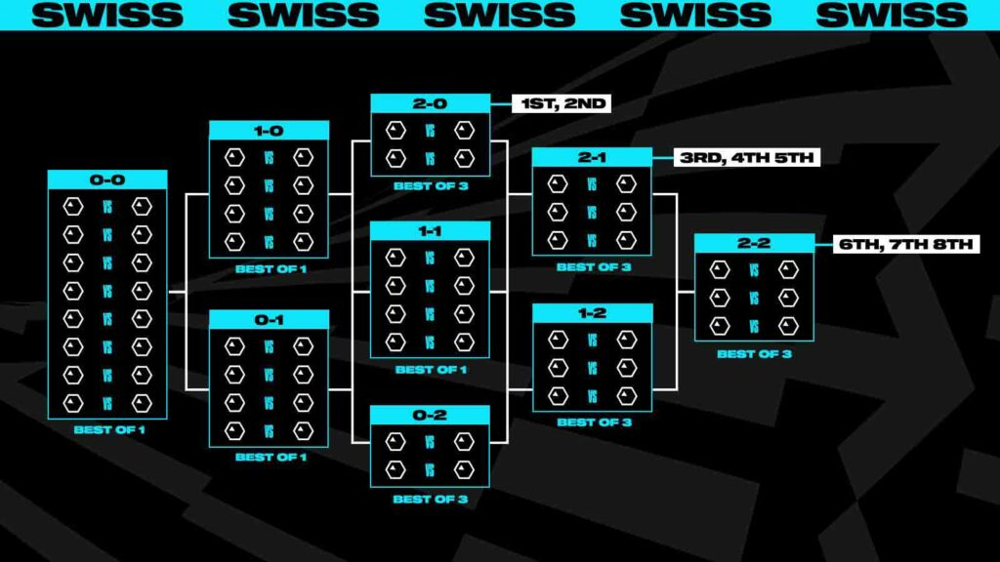

Worlds 2023

Overview
The teams for Worlds 2023, the League of Legends World Championship, are almost all decided. This year's tournament will take place in South Korea, from October 10 to November 19, with 22 teams, including the champion of the 2nd Split of the Brazilian LoL Championship (CBLOL), whose final is scheduled for September 9.
Participants are defined through the leagues of nine regions, with South Korea and China being the countries with the largest number of representatives and that have not competed in the world championship since the beginning. Worlds 2023 has three phases: entry, Swiss and playoffs.
Qualified Teams for Worlds 2023
- JD Gaming (LPL _ China)
- Bilibili Gaming (LPL _ China)
- LNG Esports (LPL _ China)
- Weibo Gaming (LPL _ China)
- Cloud9 (LCS _ North America)
- NRG (LCS _ North America)
- Gen.G (LCK _ South Korea)
- Team Liquid (LCS _ North America)
- T1 (LCK _ South Korea)
- MAD Lions (LEC _ EMEA)
- G2 Esports (LEC _ EMEA)
- DetonatioN FocusMe (LJL _ Japan)
- KT Rolster (LCK _ South Korea)
- Dplus KIA (LCK _ South Korea)
- PSG Talon (PCS _ Taiwan, Hong Kong, Macao and Southeast Asia)
- CTBC Flying Oyster (PCS _ Taiwan, Hong Kong, Macao and Southeast Asia)
- GAM Esports (VCS _ Vietnam)
- Movistar R7 (LLA _ Latin America)
- Fnatic (LEC _ EMEA)
- Team Whales (VCS _ Vietnam)
Open Spots
- 1 vacancy of CBLOL _ Brazil
- 1 Classification Series _ EMEA x NA
Format
The entry phase, called "play in", will begin with eight teams, two from Vietnam, two from PCS, the champions of CBLOL, Latin America and Japan and the winner of the Classification Series contested between the #4 seeds of EMEA and North America.
This means that South Koreans and Chinese will no longer play in the first round, in which representatives from emerging regions or the worst ranked teams from the main scenarios of the international LoL participate. Their presence meant that the entry place for the championship sequence was with China and South Korea, which provoked criticism from the community for taking away the opportunity of other teams.
The eight teams will be split into two double_elimination brackets and will face each other in best_of_three series (md3). With the winners of the upper and lower brackets defined, there will be md5 matchups pitting the winner of the top bracket of one group against that of the bottom bracket of the other group. The winners of these two series will advance and join 14 other teams in the Swiss round.

In this second phase, which will no longer have groups and will be completely overhauled, the 16 teams will face each other in the Swiss format, which provides for teams with the same campaign to face each other each round. Whoever reaches three wins qualifies and whoever adds three losses is eliminated. The matches for classification or elimination will be md3 and the others, md1.
In the first round, there will be a draw of the matches, with one team necessarily facing another from a different region. From there, in the following rounds, the duels will be determined according to the campaign of the teams. In the second round, teams with a 1_0 record face each other, while those with a 0_1 record also play each other.

Eight teams will move from the Swiss stage to the playoffs, which will continue to be played with md5 clashes and single elimination, that is, without upper and lower brackets, until the definition of the champion.
Dates and locations
The entry phase, in which the Brazilian representative begins, will be held from October 10 to 15 at LOL Park, the studio where the matches of LCK, the South Korean LoL league, are played in Seoul.
The Swiss phase will take place from October 19 to 23 and from October 26 to 29 at the KBS Arena in Seoul.
Quarterfinals and semifinals are scheduled to take place at Sajik Indoor Gymnasium in Busan. Wednesdays will be from November 2 to 5 and semis on November 11 and 12
The final will be on Nov. 19 at the Gocheok Sky Dome, which is South Korea's largest indoor venue and home of Seoul's Kiwoom Heroes baseball team.
Subtile 3
Explanatory text 3